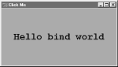

| I l@ve RuBoard |
|
7.5 Binding EventsWe met the bind widget method in the last chapter, when we used it to catch button presses in the tutorial. Because bind is commonly used in conjunction with other widgets (e.g., to catch return key presses for input boxes), we're going to make a stop early on the tour here as well. Example 7-15 illustrates more bind event protocols. Example 7-15. PP2E\Gui\Tour\bind.pyfrom Tkinter import *
def showPosEvent(event):
print 'Widget=%s X=%s Y=%s' % (event.widget, event.x, event.y)
def showAllEvent(event):
print event
for attr in dir(event):
print attr, '=>', getattr(event, attr)
def onKeyPress(event):
print 'Got key press:', event.char
def onArrowKey(event):
print 'Got up arrow key press'
def onReturnKey(event):
print 'Got return key press'
def onLeftClick(event):
print 'Got left mouse button click:',
showPosEvent(event)
def onRightClick(event):
print 'Got right mouse button click:',
showPosEvent(event)
def onMiddleClick(event):
print 'Got middle mouse button click:',
showPosEvent(event)
showAllEvent(event)
def onLeftDrag(event):
print 'Got left mouse button drag:',
showPosEvent(event)
def onDoubleLeftClick(event):
print 'Got double left mouse click',
showPosEvent(event)
tkroot.quit()
tkroot = Tk()
labelfont = ('courier', 20, 'bold') # family, size, style
widget = Label(tkroot, text='Hello bind world')
widget.config(bg='red', font=labelfont) # red background, large font
widget.config(height=5, width=20) # initial size: lines,chars
widget.pack(expand=YES, fill=BOTH)
widget.bind('<Button-1>', onLeftClick) # mouse button clicks
widget.bind('<Button-3>', onRightClick)
widget.bind('<Button-2>', onMiddleClick) # middle=both on some mice
widget.bind('<Double-1>', onDoubleLeftClick) # click left twice
widget.bind('<B1-Motion>', onLeftDrag) # click left and move
widget.bind('<KeyPress>', onKeyPress) # all keyboard presses
widget.bind('<Up>', onArrowKey) # arrow button pressed
widget.bind('<Return>', onReturnKey) # return/enter key pressed
widget.focus() # or bind keypress to tkroot
tkroot.title('Click Me')
tkroot.mainloop()
Most of this file consists of callback handler functions triggered when bound events occur. As we learned in Chapter 6, these callbacks all receive an event object argument that gives details about the event that fired. Technically, this argument is an instance of the Tkinter Event class, and its details are attributes; most of the callbacks simply trace events by displaying relevant event attributes. When run, this script makes the window shown in Figure 7-20; it's mostly intended just as a surface for clicking and pressing event triggers. Figure 7-20. A bind window for the clickingThe black-and-white medium of the book you're holding won't really do justice to this script -- when run live, it uses the configuration options shown earlier to make the window show up as black on red, with a large Courier font. You'll have to take my word for it (or run this on your own). But the main point of this example is to demonstrate other kinds of event binding protocols at work. We saw a script that intercepted left and double-left mouseclicks with the widget bind method earlier; the script here demonstrates other kinds of events that are commonly caught with bind:
Here is what shows up in the stdout output stream, after a left click, right click, left click and drag, a few key presses, a Return and up-arrow press, and a final double-left click to exit. When you press the left mouse button and drag it around on the display, you'll get lots of drag event messages -- one is printed for every move during the drag (and one Python callback is run for each): C:\...\PP2E\Gui\Tour>python bind.py Got left mouse button click: Widget=.7871632 X=209 Y=79 Got right mouse button click: Widget=.7871632 X=209 Y=79 Got left mouse button click: Widget=.7871632 X=83 Y=63 Got left mouse button drag: Widget=.7871632 X=83 Y=65 Got left mouse button drag: Widget=.7871632 X=84 Y=66 Got left mouse button drag: Widget=.7871632 X=85 Y=66 Got left mouse button drag: Widget=.7871632 X=85 Y=67 Got left mouse button drag: Widget=.7871632 X=85 Y=68 Got key press: s Got key press: p Got key press: a Got key press: m Got key press: 1 Got key press: - Got key press: 2 Got key press: . Got return key press Got up arrow key press Got left mouse button click: Widget=.7871632 X=85 Y=68 Got double left mouse click Widget=.7871632 X=85 Y=68 For mouse-related events, callbacks print the X and Y coordinates of the mouse pointer, in the event object passed in. Coordinates are usually measured in pixels from the upper-left corner (0,0), but are relative to the widget being clicked. Here's what is printed for a left, middle, and double-left click. Notice that the middle-click callback dumps the entire argument -- all of the Event object's attributes. Different event types set different event attributes; most key presses put something in char, for instance: C:\...\PP2E\Gui\Tour>python bind.py Got left mouse button click: Widget=.7871632 X=163 Y=18 Got middle mouse button click: Widget=.7871632 X=152 Y=110 <Tkinter.Event instance at 7b3640> char => ?? height => 0 keycode => 2 keysym => ?? keysym_num => 2 num => 2 send_event => 0 serial => 14 state => 0 time => 5726238 type => 4 widget => .7871632 width => 0 x => 152 x_root => 156 y => 110 y_root => 133 Got left mouse button click: Widget=.7871632 X=152 Y=110 Got double left mouse click Widget=.7871632 X=152 Y=110 Besides the ones illustrated in this example, there are additional kinds of bindable events that a Tkinter script can register to catch. For example:
This is not a complete list, and event names can be written with a somewhat sophisticated syntax all their own. For example:
In the interest of space, though, we'll defer to other Tk and Tkinter reference sources for an exhaustive list of details on this front. Alternatively, changing some of the settings in the example script and rerunning can help clarify some event behavior too; this is Python, after all. |
| I l@ve RuBoard |
|